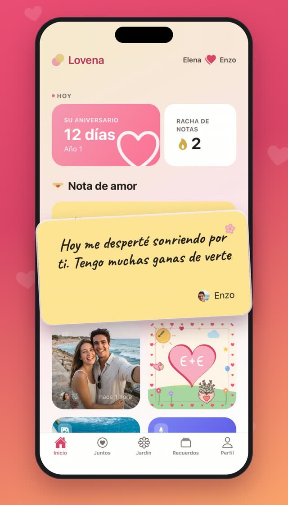
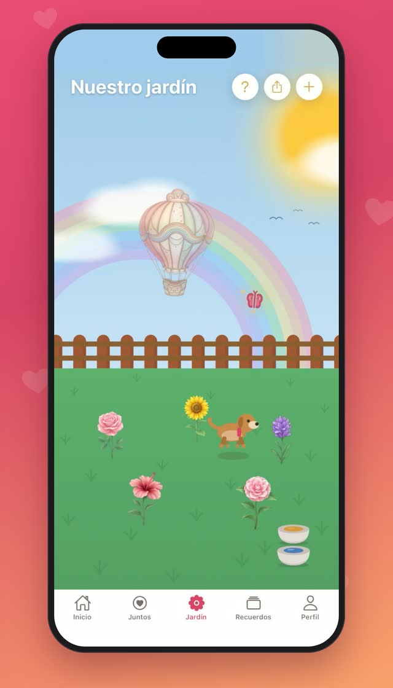
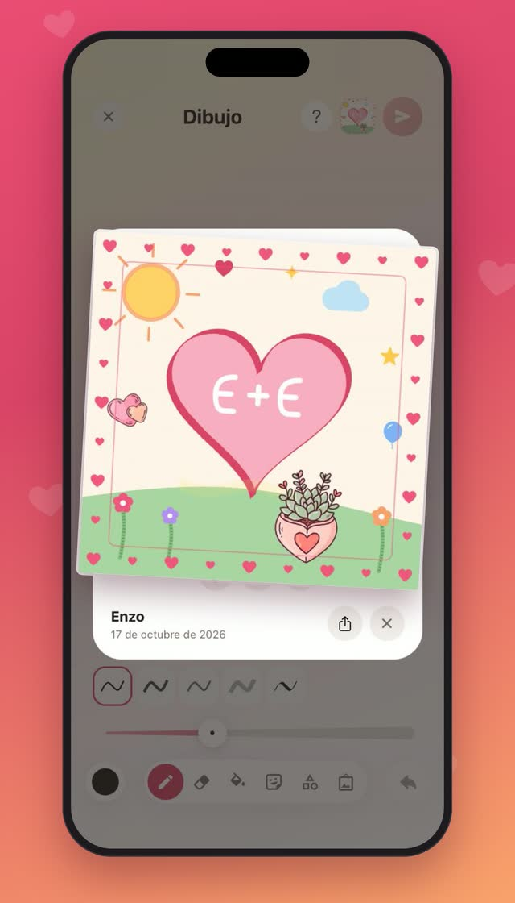
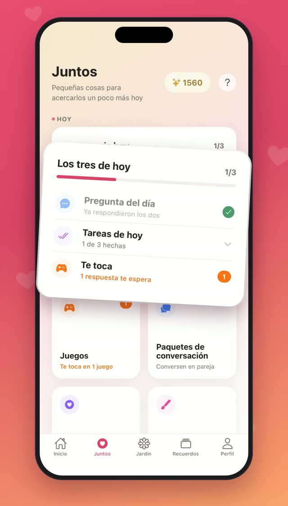
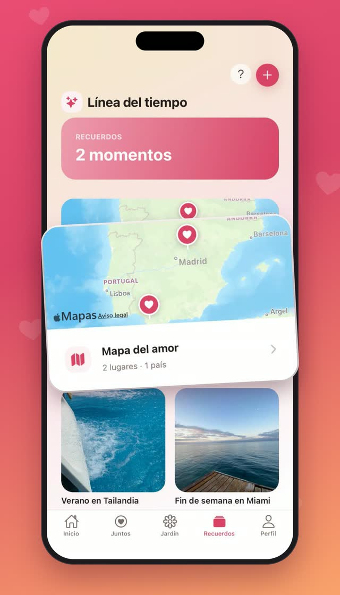
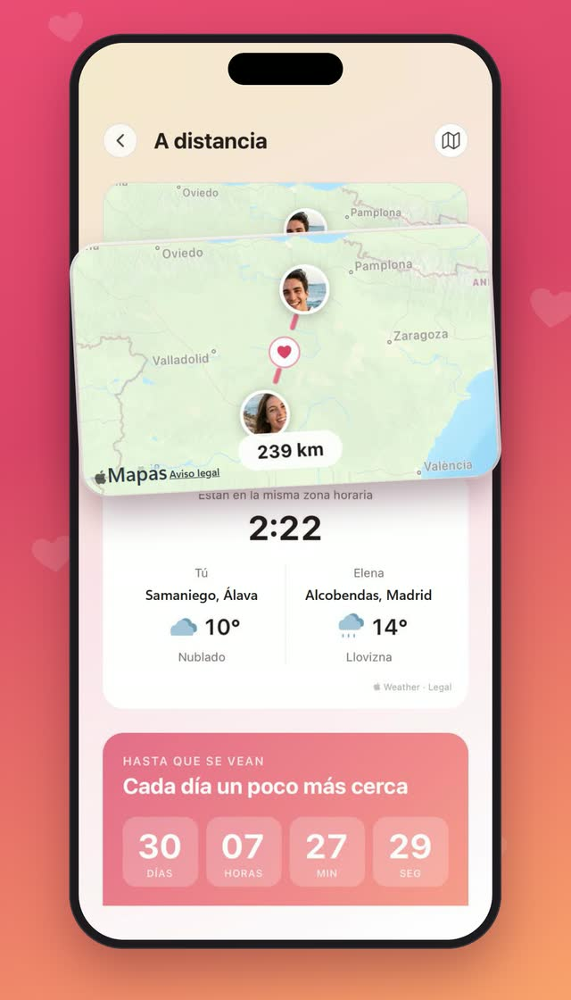

solo para ustedes dos
Un pequeño mundo hecho entre dos.
Notas que llegan a la pantalla de inicio de tu pareja, un jardín que riegan entre los dos, una pregunta cada noche, juegos para dos y cada día que vale la pena recordar. Privado, cálido y solo de ustedes.
Muy pronto en App Store y Google Play
- Solo ustedes dos
- Sin anuncios
- 10 idiomas




Nuestro jardín
Un jardín que crece cuando los dos pasan por él
Planten una flor, ríeguenla entre los dos y véanla abrirse con los días. Ahí también vive una pequeña mascota, más feliz cada día que ambos pasan a verla.
- Las flores se abren con el cuidado de los dos
- Una mascota cuyo vínculo crece con el suyo
- Las flores que recogen llenan su florero

Notas de amor y dibujo
Palabras pequeñas, justo donde se van a ver
Escribe una nota de amor y aparece en la pantalla de tu pareja. Dibuja algo con pinceles, stickers y marcos, manda una nota de voz o una foto instantánea de tu día.
- Las notas y los dibujos aparecen en el widget
- Notas de voz y fotos instantáneas
- Dibujen para la otra persona, o a la vez

Pregunta del día y Hablen
Una pregunta al día, y esas charlas que siempre posponen
Responde la pregunta del día por tu cuenta y luego mira lo que escribió tu pareja. Los paquetes de conversación abren una pregunta cada día: de charlas profundas a sueños, dinero, raíces y gratitud.
- Escribe tu respuesta para ver la otra
- Paquetes que abren un día nuevo cada vez
- Un programa de 30 días para estar más cerca

Juegos para dos
Jueguen juntos, aunque estén en dos ciudades
Juegos cortos pensados para dos teléfonos: unos para conocerse mejor y otros en los que solo se gana en equipo.
Esto o aquello
Elecciones rápidas, respuestas sorprendentes.
Quiz de pareja
¿Qué tan bien se conocen de verdad?
Rompecabezas del amor
Convierte una foto en un rompecabezas para tu pareja.
Torre juntos
Apilen pisos por turnos, tan alto como se atrevan.
Dos Manos
Un solo tablero: una mano mueve, la otra gira.
Encuentro al amanecer
Día y Noche se guían a lo largo de veinte niveles.
Recuerdos y días especiales
Su historia, guardada en un solo lugar
Álbumes, una línea de tiempo y un mapa del amor con todos los lugares donde han estado. Sellen una cápsula del tiempo para el futuro y no se les vuelva a pasar un aniversario.
- Álbumes, línea de tiempo y mapa del amor
- Cápsulas del tiempo que se abren el día que elijan
- Cuentas regresivas para cumpleaños y aniversarios

A distancia
A kilómetros, pero lado a lado
Vean la ciudad de cada quien, la distancia entre ustedes, la hora y el clima de allá, y cuenten los días hasta volver a verse.
- Los dos relojes y los dos cielos en una tarjeta
- Solo se comparte la ciudad, nunca el lugar exacto
- Una cuenta regresiva para el próximo reencuentro

Nuestra promesa
Privado desde el diseño. Solo ustedes dos.
Lovena no es una red social. No hay feed, ni seguidores, ni nadie más en la habitación.
Solo ustedes dos
Todo lo que comparten lo ven ustedes dos y nadie más.
Sin anuncios
A Lovena la sostienen quienes la quieren, no los anunciantes.
Nunca se vende
Sus datos nunca se venden ni se entregan a nadie para lucrar.
Nada de entrenar IA
Sus notas, fotos y respuestas nunca se usan para entrenar inteligencia artificial.
Preguntas
Bueno saberlo
¿Lovena es gratis?
Sí. Lovena es gratis para descargar y para usar juntos cada día. Plus y Gold son opcionales, y una sola suscripción cubre a los dos.
¿Qué añaden Plus y Gold?
Más de todo lo que ya les gusta: más paquetes de conversación y juegos, más flores y floreros para su jardín y más espacio para guardar fotos, notas de voz y recuerdos por más tiempo. Gold es el más generoso.
¿Mi pareja también necesita la app?
Sí, Lovena está hecha para dos teléfonos. Una persona crea su espacio y envía un enlace o código de invitación; la otra persona se une con él. iPhone y Android se conectan sin problema.
¿Qué pasa con nuestros datos si borramos la cuenta?
Tu cuenta se elimina al instante. Lo que crearon juntos se guarda 30 días para que la otra persona pueda descargarlo y luego se borra para siempre, archivos incluidos.
¿En qué idiomas está Lovena?
Por ahora en diez: Deutsch, English, Español, Français, Italiano, Português (Brasil), Türkçe, 한국어, 日本語, 繁體中文. Cada persona puede usar la app en su propio idioma.
Su mundo para dos ya casi está listo
Lovena llega muy pronto a iPhone y Android.
Muy pronto en App Store y Google Play